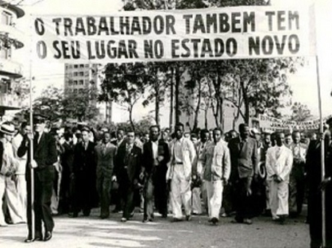

Decreto n.º 229, de 28 de fevereiro de 1967 - introduziu uma série de modificações no corpo da CLT.
Visando adequar a CLT à política pretendida pelo Governo Militar, a Constituição de 1967 trouxe mudanças na composição do Tribunal Superior do Trabalho, que passou a ter 17 juízes; dos Tribunais Regionais e na forma de nomeação criando a carreira de magistrados do trabalho, mantendo ainda a composição paritária dos órgãos da Justiça do Trabalho. Trouxe também em seu texto a proibição de greve nos serviços públicos e atividades essenciais, proibição das diferenças salariais por motivos de sexo, cor ou estado civil, a garantia de salário-família aos dependentes do trabalhador, aposentadoria da mulher aos trinta anos de contribuição, previu a contribuição sindical e voto sindical secreto.